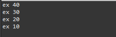
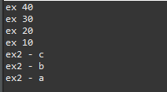
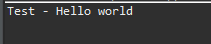

[Java] 17. ジェネリックタイプ(Generic type)を使う方法
こんにちは。明月です。
この投稿はJavaのジェネリックタイプ(Generic type)を使う方法に関する説明です。
クラスの内部メンバー変数を設定する時に、データタイプと変数名を作成します。
しかし、メンバー変数のデータタイプをクラス内部で設定することではなく、クラスをインスタンス生成(割り当て)する時に決めたい時があります。
// リンクスタッククラス。
public class LinkedStack {
// 内部Nodeクラス
class Node {
// データを格納変数
int data;
// 次のポインタ
Node next;
// コンストラクタ
Node(int data, Node next) {
// メンバー変数設定
this.data = data;
this.next = next;
}
}
// 現在のNodeポインタ
private Node pointer = null;
// add関数はデータを格納する。
public void add(int data) {
// 現在のポインタにNodeのインスタンスを生成して格納する。
// 次のポインタは以前のポインタに連結する。
pointer = new Node(data, pointer);
}
// pop関数は現在ポインタのNodeの値をリターンする。
public int pop() {
// ポインタがnullの場合はnull Exceptionエラーを発生する。
if (pointer == null) {
// null例外処理
throw new NullPointerException();
}
try {
// 現在ポインタのNode値をリターンする。
return pointer.data;
} finally {
// ポインタを以前のNodeインスタンスに移動
pointer = pointer.next;
}
}
// 現在ポインタがnullかを確認する関数
public boolean isNull() {
return pointer == null;
}
// 実行関数
public static void main(String... args) {
// LinkedStackインスタンスを生成
LinkedStack ex = new LinkedStack();
// 値を入れる。
ex.add(10); // debug : 10*
ex.add(20); // debug : 20* 10
ex.add(30); // debug : 30* 20 10
ex.add(40); // debug : 40* 30 20 10
// 値を出力する。
while(!ex.isNull()) {
// コンソールに出力
System.out.println("ex " + ex.pop());
}
}
}

上の例を単純なリンクスタックアルゴリズムです。リンクスタックアルゴリズムはリストやマップみたいにデータを挿入して取り出して出力します。
リストと差異があればaddで格納したら逆順でpop関数でデータを取り出すことです。
上の例はint型のデータタイプしか使えません。でも、仕様によってStringタイプも使いたいです。その場合は内部クラスのNodeのメンバー変数のデータタイプとadd関数のパラメータ、pop関数のリターンタイプを変更してソースをコピペするしかないです。
あるいはデータタイプをObjectタイプにしてもよいです。でもObjectタイプに使うとデータタイプの整合性の確認ができなくなります。継承する方法もあります。
でも、簡単に考えるとそのデータタイプをインスタンスを生成する時に決めることにできれば簡単に解決します。その機能がジェネリックタイプです。
ジェネリックは薬のジェネリックと同じ意味で枠だけ作っておいて内部のタイプは外部から設定するという意味です。
// クラスの隣の<T>はジェネリックタイプという意味でまだ決まってないデータタイプだ。
public class LinkedStack<T> {
// 内部Nodeクラス
class Node {
// データを格納変数(データタイプをジェネリックによって決める)
T data;
// 次のポインタ
Node next;
// コンストラクタ(パラメータのデータタイプはジェネリックによって決める)
Node(T data, Node next) {
// メンバー変数設定
this.data = data;
this.next = next;
}
}
// 現在のNodeポインタ
private Node pointer = null;
// add関数はデータを格納する。(パラメータのデータタイプはジェネリックによって決める)
public void add(T data) {
// 現在のポインタにNodeのインスタンスを生成して格納する。
// 次のポインタは以前のポインタに連結する。
pointer = new Node(data, pointer);
}
// pop関数は現在ポインタのNodeの値をリターンする。(リターンのデータタイプはジェネリックによって決める)
public T pop() {
// ポインタがnullの場合はnull Exceptionエラーを発生する。
if (pointer == null) {
// null例外処理
throw new NullPointerException();
}
try {
// 現在ポインタのNode値をリターンする。
return pointer.data;
} finally {
// ポインタを以前のNodeインスタンスに移動
pointer = pointer.next;
}
}
// 現在ポインタがnullかを確認する関数
public boolean isNull() {
return pointer == null;
}
// 実行関数
public static void main(String... args) {
// LinkedStackインスタンスを生成
// 内部ジェネリックデータタイプはIntegerタイプに設定
LinkedStack<Integer> ex = new LinkedStack<>();
// 値を入れる。
ex.add(10); // debug : 10*
ex.add(20); // debug : 20* 10
ex.add(30); // debug : 30* 20 10
ex.add(40); // debug : 40* 30 20 10
// 値を出力する。
while (!ex.isNull()) {
// コンソールに出力
System.out.println("ex " + ex.pop());
}
// 内部ジェネリックデータタイプはStringタイプに設定
LinkedStack<String> ex2 = new LinkedStack<>();
// 値を入れる。
ex2.add("a"); // debug : a*
ex2.add("b"); // debug : b* a
ex2.add("c"); // debug : c* b a
// 値を出力する。
while (!ex2.isNull()) {
// コンソールに出力
System.out.println("ex2 - " + ex2.pop());
}
}
}

上のジェネリックタイプをみれば以前のListやMapでもよく見たことです。
link - [Java] 5. 配列とリスト(List)、マップ(Map)の使い方
ジェネリックはクラスだけではなく、インタフェースや関数などでも使えます。
// ジェネリックを利用したインタフェース
interface Callable<V> {
V call();
}
// インタフェースを継承、ジェネリックタイプにStringを設定
class Test implements Callable<String> {
// 再定義する時にリターン値をStringに設定する。
@Override
public String call() {
return "Hello world";
}
}
public class Example {
// ジェネリック関数、ジェネリック関数はリターンタイプの前にジェネリックを宣言する。
public static <T> T test(Callable<T> func) {
// インタフェースによるcall関数を呼び出す。
return func.call();
}
// 実行関数
public static void main(String... args) {
// Testインスタンスを生成
Test test = new Test();
// TestクラスはジェネリックがStringタイプなのでStringタイプの結果がリターンする。
String data = test(test);
// コンソールに出力
System.out.println("Test - " + data);
}
}

インタフェースにジェネリックを宣言して継承したTestクラスでジェネリックタイプをStringに設定しました。そして関数にはインタフェースのジェネリックタイプでリターン値が設定されます。
なので、test関数を使う時には別にジェネリックタイプを設定しなくてよいです。
ジェネリックは基本的にObjectタイプですべてのクラスを設定することができますが、その設定する範囲も設定することができます。
// 一般Subクラス
class Sub {
// メンバー変数
private int data;
// コンストラクタからデータを受け取る。
public Sub(int data) {
this.data = data;
}
// メンバー変数の値をリターンする。
public int data() {
return this.data;
}
}
// ジェネリックを利用するインタフェース
// TジェネリックはSubクラスやSubクラスを継承するデータタイプに設定する。
// ジェネリックを二つ設定することも可能。
interface Callable<T extends Sub, V> {
V call(T data);
}
// Callableインタフェースを継承
class Test implements Callable<Sub, String> {
// TはSubクラスをVはStringタイプを設定する。
@Override
public String call(Sub sub) {
// データリターン
return "Parameter - " + sub.data();
}
}
// 実行クラス
public class Example {
// 実行関数
public static void main(String... args) {
// Testインスタンスを生成
Test test = new Test();
// Subインスタンスを生成
Sub sub = new Sub(10);
// Testクラスのcall関数にsubクラスを渡すと10のデータがリターンする。
System.out.println(test.call(sub));
}
}
上の例はデザインパターンのBuildパターンを参考しました。
ジェネリックを知らなかったらプログラムを作成できないことではありません。ジェネリック代わりにObjectタイプに設定すればプログラム作成することはできます。
でもジェネリックを利用すればコンパイル段階で整合性チェックするので別にデータタイプのキャスターエラーや変なデータになる可能性が低くなります。つまり、プログラムの品質を改善することができます。
ここまでJavaのジェネリックタイプ(Generic type)を使う方法に関する説明でした。
ご不明なところや間違いところがあればコメントしてください。
- [Java] 24. Javaの同期化(Synchronized)とデッドロック(Deadlock)2019/09/11 23:06:09
- [Java] 23. スレッドプール(Threadpool)を使う方法2019/09/10 21:55:36
- [Java] 22.スレッド(Thread)を使う方法2019/09/06 22:30:49
- [Java] 21. アノテーション(Annotation)を使う方法2019/09/05 22:58:20
- [Java] 20. iterator(for-each)とStream APIを使う方法2019/09/04 20:11:28
- [Java] 19. ラムダ(Lambda)を使う方法2019/09/03 20:37:14
- [Java] 18. 匿名クラス(Anonymous class)とクロージャ(closure)2019/09/02 20:30:34
- [Java] 17. ジェネリックタイプ(Generic type)を使う方法2019/08/27 19:05:44
- [Java] 16. 例外処理(try~catch~finally, throw)を使う方法2019/08/26 23:40:29
- [Java] 15. 列挙型(バイナリデータビット演算子の使用例)2019/08/23 19:46:10
- [Java] 14. オブジェクト指向プログラミング(OOP)の4つ特性(カプセル化、抽象化、継承、多相化)2019/08/22 20:08:37
- [Java] 13. 抽象クラス(abstract)と継承禁止(final)2019/08/22 00:06:20
- [Java] 12. インタフェース(interface)2019/08/20 23:46:23
- [Java] 11. StringのhashCodeとequals、そしてtoStringの再定義(override)2019/08/20 00:42:04
- [Java] 10. メモリの割り当て(stackメモリとheapメモリ、そしてnew)とCall by reference(ポインタによる参照)2019/08/07 20:53:34
- [C#] 45. ネットワークソケット通信(Socket)を使い方2021/10/06 19:06:25
- [C#] 44. ファイル(FileInfo)とディレクトリ(DirectoryInfo)を扱い2021/10/05 19:29:34
- [C#] 43. ストリーム(Stream)とバイナリ(byte[])、エンコード(Encoding)、そしてusingを使い方とIDisposableインターフェース2021/10/04 18:33:04
- [C#] 42. ファイルを扱い(IO)とファイルメタデータ(FileInfo)を使い方2021/10/01 20:10:21
- [C#] 41. Taskクラスとasync、awaitを使い方2021/10/01 18:59:14
- [Javascript ] WebのFull calendar(スケジュールカレンダー)の使い方法2021/07/15 21:35:36
- [Java] 56. Web serviceのサーブレット(Servlet)で初期化作業(properties設定)2021/07/02 17:10:36
- [Java] 55. Spring frameworkに文字化けを解決する方法(Encoding設定)2021/06/30 16:37:16
- [Java] 54. Spring frameworkでWeb filterを使う方法2021/06/29 18:25:12
- [Java] 53. ウェブサービス(Web service)でエラーページを処理する方法2021/06/25 13:35:54
- [Design pattern] 1-3. ファクトリメソッドパターン(Factory method pattern)2021/06/23 19:45:37
- [Java] WebSocketでチャット履歴をローディングする方法2021/06/15 18:34:45
- [Java] WebSocketを利用してユーザ(サイト運用者)が他のユーザとチャットする方法2021/06/15 17:20:08
- [Design pattern] 1-2. ビルダーパターン(Builder pattern)2021/06/11 19:06:28
- [Design pattern] 1-1. シングルトンパターン(Singleton pattern)2021/06/09 19:40:05